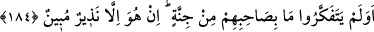
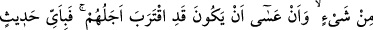
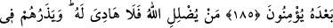
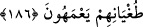

HANGİ SÖZE İNANACAKLAR?
184. Düşünmediler mi ki, arkadaşlarında (Muhammed’de) delilik yoktur? O,
ancak apaçık bir uyarıcıdır.
185. Göklerin ve yerin hükümranlığına, Allah’ın yarattığı her şeye ve ecellerinin
yaklaşmış olabileceğine bakmadılar mı? O halde Kur’an’dan sonra hangi söze
inanacaklar?
186. Allah kimi şaşırtırsa, artık onun için yol gösteren yoktur. Ve onları
azgınlıkları içinde şaşkın olarak bırakır.
“Düşünmediler mi ki, arkadaşlarında hiç delilik yoktur.”
Rivayet edildiğine göre Rasûl-i Ekrem (s.a.v.) çoğu zaman Kureyş’i Allah’ın azabıyla
ve geçmiş ümmetlerin başlarına gelen musibetlerle korkutmaya çalışırdı. Bir gece Safa
tepesine çıktı. “Ey fülan oğulları! Ey fülan oğulları!” diyerek ve Allah’ın azabından
sakındırarak Kureyş’i kabile kabile Allah’a kulluğa çağırmaya başladı. Bunun üzerine
müşriklerden biri: “İşte sizin şu arkadaşınız, yani Muhammed (a.s.) deli. Geceyi sabaha
kadar haykırarak geçirdi.” dedi. İşte bunun üzerine bu ayet nâzil oldu.
Cinnet, bir çeşit delilik demektir. Ayet, Rasûlullah (s.a.v.)’de deliliğin hiçbir
çeşidinin bulanmadığını ifâde etmektedir. Ayetin mânâsı şöyledir: “Onlar, ayetleri
yalanladılar ve arkadaşlarında hiçbir delilik eseri bulunmadığını düşünmediler mi?”
Yâhut mânâ şu şekildedir: “Arkadaşlarında hiç delilik yoktur ki bu konuda düşünmek
onları O’nun doğruluğuna, peygamberliğinin sıhhatini kabule götürür, O’na ve O’na
indirilen ayetlere inanırlar.”
Hz. Peygamber (a.s.)’da delilik olmadığının açıkça ifade edilmesi, müşriklerin çirkin
saldırılarını reddetmek içindir.
Hz. Peygamber (a.s.)’ın “onların arkadaşları” olarak ifâde edilmesi, onların sözüne
uygun olması içindir. Ayrıca uzun süre O’nunla beraber olmalarının kendisinin delilik
şâibesinden uzak olduğunu anlamalarına imkan verdiğini bildirmektedir. Çünkü onlar
peygamberliğini açıklamadan önce onu “Muhammedü’l-Emîn” (s.a.v.) diye
isimlendiriyorlardı.